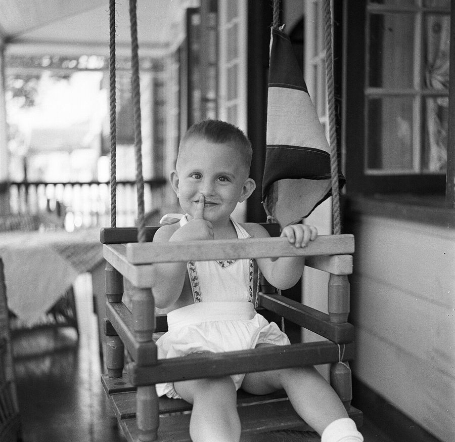
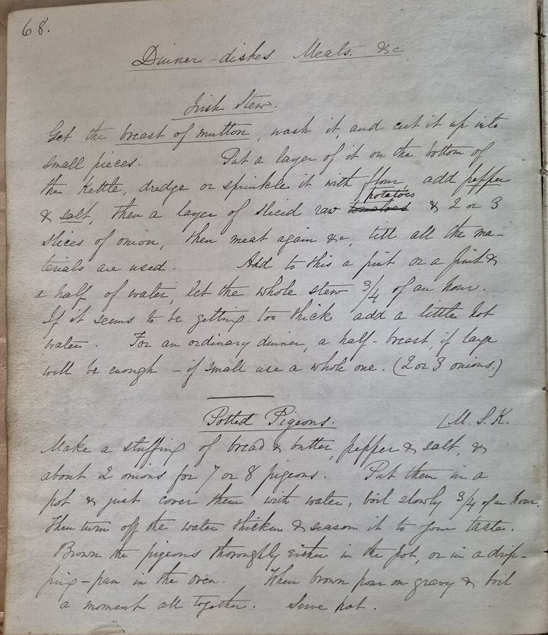

We rarely face exactly the situations we learned from.
In class, we learn by solving exercises. In research, we face problems nobody has solved yet. Both are sets of worlds, and what we learned in the first must carry over to the second.
Which knowledge carries over, and why, is the question of knowledge transfer.
A robot's environments keep changing with technology and society: factories yesterday, space stations and hospitals today, settings that do not exist yet tomorrow. It cannot be trained on every one of them, so we would like to choose the training environments whose lessons transfer best, again and again.
An industrial robot in 1982, Robonaut on the International Space Station, and a concept of a lunar base.
Next: why simple worlds ↓Physics learns a lot from situations that do not exist.

A real swing is pushed, rubs at its hinges, meets the air, and carries a child who moves. Physicists first study an ideal pendulum: a point mass on a weightless string, without friction. It does not exist, but it isolates one phenomenon so that it can be understood and measured cleanly.
What holds for the ideal pendulum is not guaranteed to hold for the swing, but it tells us what to look for there.
We do the same for knowledge transfer: worlds are sets of grids defined by rules. A model learns to solve puzzles in some worlds, and we test it on puzzles of worlds it has never seen.
Because worlds are built from explicit rules, we control exactly what the new worlds share with the training ones. What we observe here is not guaranteed to hold in richer settings: it gives hypotheses to test there, and a lens to look at them.
Next: telling or showing ↓There are two ways of passing knowledge on.

We can describe the rules, as a recipe does, or show how it is done, as a cook does in front of apprentices. People use both, and neither is always better: a recipe is short and exact, while a demonstration conveys what is hard to put into words.
In our worlds, the model learns which world it is in either from a description of its rules or from two solved puzzles, and we compare the two.
Next: what to learn from ↓If transfer depends on what the training worlds contain, choosing them is part of the problem.
In our experiments, describing the rules of a new world helps most when those rules, or their components, already appeared together in some training worlds. When they never did, the description helps much less, and showing solved examples works better.
So what a model can do with new knowledge depends on what it was trained on, and our framework lets us vary this precisely. The measurements are in the Results section.
Back to the main page ↓We think of a world as a set of experiences. Just as a picture can be approximated by a grid of coloured cells, experiences can be approximated by grids of symbols: here a world is a set of such grids, defined by rules that forbid some patterns. We explore how a model trained on a set of worlds can use its knowledge to navigate worlds it has never seen.
Sudoku grids, for instance.
A 6×6 Sudoku is a world whose grids follow three rules:
Each rule forbids some patterns, for instance the same number twice in a row. The grid on the left breaks none of them.
Keep rows and columns, swap the box rule for another one, and you get a different world:
The grid on the left now follows the new rule (shaded) instead of the boxes.
Mixing rules from a common pool gives a whole family of small worlds that share the same base.
Each stack on the left is one world: all the grids that obey its rules. Only one of them is shown.
In the paper, every world keeps the rows-and-columns rule and adds 2–4 rules from a pool of 49. That makes thousands of related worlds, on which a model can be trained and then tested on worlds it has never seen.
Next: puzzles ↓To make one, we start from a full grid of the world and blank cells one at a time, as long as the solution stays unique.
Uniqueness makes the answer checkable: a model's output is right only if it matches the solution exactly. In our datasets we stop earlier, at a calibrated number of blank cells (at least 14 of the 36), so that puzzles are about as hard as a 9×9 Sudoku.
Build some world ↓Start from Sudoku, then swap or add rules. Each change gives a new world and a new puzzle with exactly one solution.
The model gets a puzzle, with something placed before it in its input, a bit like a prompt. We compare three kinds of prompt.
The rules written in a tiny symbolic language, 4 tokens per rule. The model has to read them and apply them.
Two solved grids from the same world, like few-shot examples (or an ARC-AGI task). The model has to work out the rules by itself.
Just the puzzle. This baseline shows how much the puzzle gives away on its own.
Both grids follow the same hidden rules: the base rule plus 2 more. Which 2?
Hover a rule to see where it acts on both grids.
Since every world is built from known pieces, we can control exactly what is new at test time: from a fresh puzzle to a rule the model has never met.
We trained one small reasoning model (about 1M parameters, a recurrent design similar to HRM) on puzzles from 500 worlds, then tested it level by level. Step through:
A model that always gets the rules handed to it never has to work them out from the grid. When the description combines building blocks it has never seen together, it has nothing to fall back on. A simple fix: hide the description on half of the training puzzles (“description dropout”). The model then lands above the baseline (58.8% vs 52.1%), losing only 1–2 points on known rules.
These results are for the model we tested, on 6×6 grids. They show what this setup can measure, not general laws. The paper also covers larger grids and other models.
Sudoku is a natural starting point: it is a standard test for small reasoning models. From there, we explore the worlds around it, observe how knowledge transfers, and progressively cover more families of worlds.
Each dot is a world. Sudoku is one of them.
Small reasoning models are trained and tested on Sudoku, so it is a well-understood place to start.
This work explores the worlds around Sudoku: 6×6 grids whose extra rules come from a pool of 49, plus larger grids. We look for phenomena, such as when describing the rules helps or hurts.
The rest of this page is about this region.
Each region prepares the next: we observe phenomena, turn them into hypotheses, and test these on wider and wider families of worlds, such as other kinds of rules or other geometries.